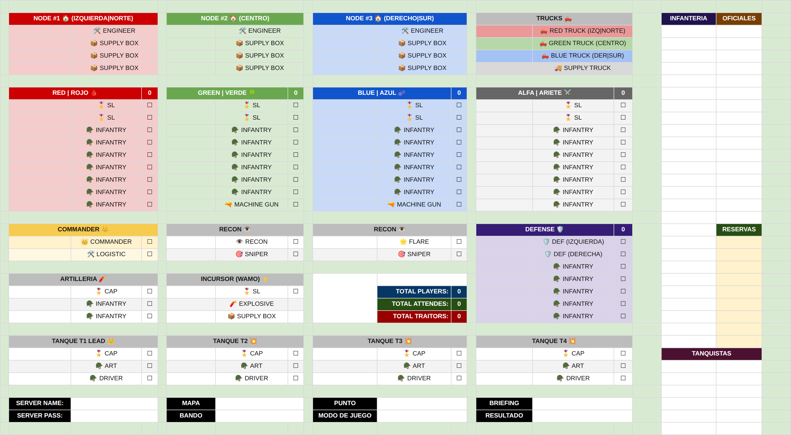

02 · Apartado
Todo lo que pasa antes de que suene el primer tiro: dónde jugás, qué rol te toca, si hacés nodos y qué tenés que hacer en el arranque. Existe para que nadie llegue al server con la duda de "¿y ahora qué hago?".
Pre-match
La columna "Inicio" es organizativa: si tenés responsabilidades más allá de SL e INF, aparecen acá. En el inicio no hay tiempo para andar buscando rol — seguí la asignación.
Lo primero que se construye es un nodo de MANPOWER: le baja el cooldown al soporte para tirar supplies más seguido. Todo lo demás sale de ahí.
Leer el roster
Cada casilla es un jugador; cada bloque, un grupo. Memorizá el color de tu grupo: lo vas a usar en los nodos, en el camión y, sobre todo, en el stratsketch.
Los cuatro escuadrones de infantería · por color
El roster nombra los grupos por zona, y cada zona tiene su color. El color no es decorativo: es tu identidad toda la partida.
El lado norte / izquierda del punto. Según el mapa, puede ser el flanco fuerte (más acción) o el débil.
Puerta principal y punto de captura. Come la mayor parte del fuego y de la artillería. Lleva ametralladora.
El lado sur / derecha. Suele cubrir para que no rodeen al Centro. También lleva ametralladora.
Se mueve por el mapa como apoyo extra. Lo ves tanto en primera línea como en la retaguardia enemiga.
A cada uno le cae un rol dentro del pelotón, pero no hace falta seguirlo a rajatabla.
El color te sigue toda la partida
Es el hilo que conecta todo el pre-match. Tu color aparece una y otra vez:
Bloques de comando y utilidad
Doble asignación · un nombre en dos lugares
Tu nombre puede aparecer en tu escuadrón y en una tarea de apertura. No es un error: primero hacés la tarea, después te redesplegás a tu grupo.
Un SL rojo puede estar cargado como supply en Node #1 y como conductor del Red Truck. Al inicio: deja supplies en el HQ norte, mueve el camión, y recién ahí vuelve a liderar su escuadra Norte.
Lo demás de la hoja
El roster que ves en la web
Esta es la hoja "Template" del roster de Uranium 235: la estructura con todos los grupos, colores y puestos. Antes de cada partida se completa con los nombres.
